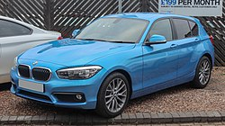

F20 (2011-2019)
BMW presentó al público en el Salón del Automóvil de Franckfort del 2011 lo que sería el sucesor del BMW Serie 1 hatchback de 5 puertas, el cual equipa con un nuevo motor a gasolina de 1.6L y para su versión diésel un 2.0L, disponible tanto en 3 como 5 puertas.
A finales de 2014 el Serie 1 F20 recibió su primer restyling, denominado F20 LCI, en el que se renovaba detalles exteriores como nuevo diseño de pilotos delanteros y traseros. Los faros delanteros con tecnología LED y traseros con un diseño muy similar a los montados en sus hermanos mayores (Serie 3 F30, Serie 4 F32 y Serie 5 F11). A su vez, en 2016 se renovaron todas las motorizaciones tanto de motores diésel como gasolina, implementando la nueva gama de motores para cumplir la futura normativa Euro 6.
A mediados de 2017, Bmw renovó el interior del F20 restyling, creando el denominado F20 LCI 2, implementando un nuevo diseño en el cuadro y salpicadero, así como la nueva generación de iDrive 6, y la nueva línea M sport shadow edition, donde se modificaban detalles como las llantas, parrillas, colas de escape en negro y faros traseros ligeramente ahumados.
Motores
\
Pre-reestilización
Gasolina
- 114i . (2012-2015) . 1598 cc I4, 16 válvulas, 102 CV (75 kW), 180 Nm
- 116i . (2011-2015) . 1598 cc I4, 16 válvulas, 136 CV (100 kW), 220 Nm
- 118i . (2011-2015) . 1598 cc I4, 16 válvulas, 170 CV (125 kW), 250 Nm
- 120i · (2015-2015) · 1598 cc I4, 16 válvulas, 177 CV (130 kW), 250 Nm
- 125i · (2012-2016) · 1997 cc I4, 16 válvulas, 218 CV (160 kW), 310 Nm
- M135i . (2012-2015) . 2979 cc I6, 24 válvulas, 320 CV (235 kW), 450 Nm
Diesel
- 114d . (2012-2015) . 1598 cc I4, 16 válvulas, 95 CV (70 kW), 235 Nm
- 118d . (2011-2015) . 1995 cc I4, 16 válvulas, 143 CV (105 kW), 320 Nm
- 120d . (2011-2015) . 1995 cc I4, 16 válvulas, 184 CV (135 kW), 380 Nm
- 125d . (2012-2015) . 1995 cc I4, 16 válvulas, 218 CV (160 kW), 450 Nm
El primer año de la serie F20 restyling, no sufrió ningún cambio en las motorizaciones, salvo a partir de 2016 cuando Bmw renovó por completo todos los motores. Es por eso, que podemos encontrar modelos restyling entre 2015 y 2016 con motores de su antecesor F20, como el 120i, M135i, algún 116i e incluso el 114i que fue descontinuado junto al 114d en 2016.
Post-reestilación
Gasolina
- 116i . (2015-2019) . 1598 cc I3, 12 válvulas, 109 CV (80 kW), 180 Nm
- 118i . (2015-2019) . 1598 cc I3, 12 válvulas, 136 CV (100 kW), 220 Nm
- 120i · (2018-2019) · 1998 cc I4, 16 válvulas, 184 CV (135 kW), 290 Nm
- 125i · (2016-2019) · 1998 cc I4, 16 válvulas, 224 CV (165 kW), 310 Nm
- M135i . (2015-2016) . 2979 cc I6, 24 válvulas, 320 CV (235 kW), 450 Nm
- M140i . (2016-2019) . 2998 cc I6, 24 válvulas, 340 CV (250 kW), 500 Nm
Diesel
- 116d . (2015-2019) . 1496 cc I3, 12 válvulas, 116 CV (85 kW), 270 Nm
- 118d . (2015-2019) . 1995 cc I4, 16 válvulas, 150 CV (110 kW), 320 Nm
- 120d . (2015-2019) . 1995 cc I4, 16 válvulas, 190 CV (140 kW), 400 Nm
- 125d . (2015-2019) . 1995 cc I4, 16 válvulas, 224 CV (165 kW), 450 Nm

Configuracion
Carrocerias
- Hatchback cinco y tres puertas